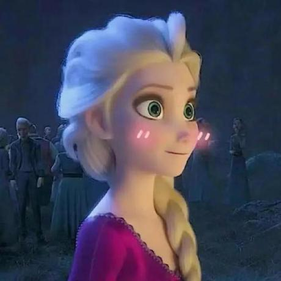

你好，我是
Widowmaker。
喜欢《冰雪奇缘》，也喜欢冰雪世界里的想象力。这是我的个人空间，从这里出发，看看我分享的项目和作品。
@Widowmarker on GitHub

@Widowmarker ↗欢迎来到我的个人空间。
在这里认识我，也看看我正在做的事。关于我，以及那些值得分享的项目。
探索、尝试，以及正在成形的想法。
喜欢《冰雪奇缘》，也喜欢冰雪世界里的想象力。这是我的个人空间，从这里出发，看看我分享的项目和作品。
从阿伦黛尔出发，走进关于魔法、勇气与爱的故事。
这里收藏着我喜欢的《冰雪奇缘》。
迪士尼动画《冰雪奇缘》以阿伦黛尔王国为舞台：Elsa 的冰雪魔法让王国陷入寒冬，妹妹 Anna 踏上寻找姐姐的旅程。冒险中的相遇与选择，让她们重新理解彼此，也让爱成为化解恐惧的力量。
在《冰雪奇缘 2》中，姐妹与伙伴们走向更远的魔法森林，追寻 Elsa 力量的来处，以及家族过去的秘密。
Frozen 官方介绍 ↗Frozen 2 官方介绍 ↗在冰雪中，学会接纳自己。
Anna 的姐姐，天生拥有创造冰雪的魔法。她曾因为害怕伤害别人而封闭自己，后来逐渐学会理解和掌握力量。面对未知，她也开始追问：自己是谁，又真正属于哪里。
没有冰雪魔法，也有坚定的力量。
Elsa 的妹妹，热情、乐观，珍惜家人与朋友。她愿意为姐姐穿越风雪，也愿意在困难面前迈出下一步。她的勇敢来自关爱、信任，以及不轻易放弃的心。
一个学着相信自己，一个始终相信爱。
她们的不同，让这段姐妹情谊更动人。
把喜欢的世界，
留在自己的角落。
个人兴趣分享 · 图片由站主提供，相关角色与电影版权归 Disney 等权利人所有。角色介绍参考 Disney 官方电影页面。
项目与代码，都在 GitHub。